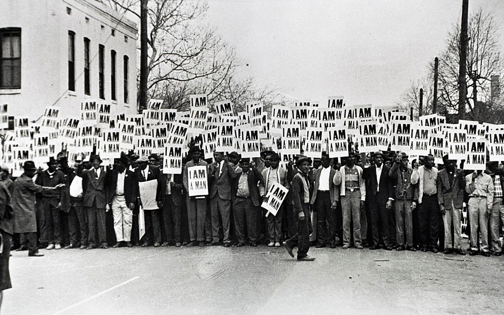
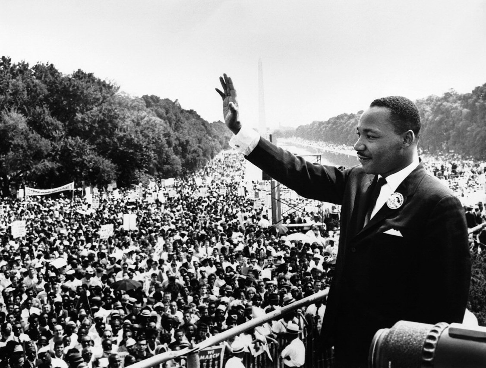
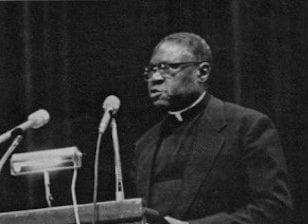

NONVIOLENT RESISTANCE
BACKGROUND
During the civil rights movement, nonviolent resistance was a powerful strategy employed by groups of activists seeking to bring about social change. This approach involved peacefully protesting and demonstrating against discriminatory laws and practices, while also refusing to comply with unjust regulations. Nonviolent resistance emphasized the importance of love, forgiveness, and reconciliation as means to challenge oppressive structures and systems. Most famously led by Dr. Martin Luther King Jr., who took inspiration by Gandhi, nonviolent resistance took a path of nonviolence and civil disobedience with the belief that action would end inequality and racial discrimination. Nonviolent demonstrators typically did so via sit-ins, boycotts, protests, marches, and more. These activists were faced with cruel pro-segregationists and racists—especially across the south—but the activists of this movement were stronger and persisted through adversity to achieve their goals.
DR. MARTIN LUTHER KING JR.
Dr. Martin Luther King Jr. was an American Baptist minister, activist, and leader in the civil rights movement. Born on January 15, 1929, in Atlanta, Georgia, Dr. King became one of the most prominent and influential figures in American history. He is best known for his role in advancing civil rights through nonviolent civil disobedience and his passionate speeches. Dr. King fought tirelessly for racial equality and justice, leading the Montgomery Bus Boycott and helping to organize the Selma to Montgomery marches in Alabama. He was also a key figure in the formation of the Southern Christian Leadership Conference and the inspiration for numerous movements advocating for peace, justice, and human rights.
JOSEPH JACKSON
Joseph Jackson was a prominent figure in the Civil Rights Movement and a dedicated advocate for social justice and equality. Born in Louisiana in 1898, Jackson moved to Chicago, Illinois as a young man and became a Baptist minister. He worked tirelessly to fight against segregation and inequality in Chicago and became a leader in the Southern Christian Leadership Conference (SCLC), working closely with Martin Luther King Jr. Reverend Jackson played a key role in organizing protests, sit-ins, and marches, and was instrumental in advocating for voting rights and desegregation in Chicago. He also played a significant role in the Chicago Freedom Movement, which aimed to challenge segregation and inequality in the city.
STOKELY CARMICHAEL

Stokely Carmichael, also known as Kwame Ture, was a prominent civil rights activist and leader in the United States during the 1960s. Born in Trinidad and Tobago in 1941, Carmichael moved to the United States as a child and became involved in the Civil Rights Movement while attending Howard University. He rose to prominence as a leader of the Student Nonviolent Coordinating Committee (SNCC) and played a key role in the organization's voter registration and desegregation campaigns in the South. Carmichael's philosophy of Black Power, which emphasized self-determination and empowerment for Black communities, was a significant influence on the Black Panther Party and other Black nationalist movements. He continued to advocate for social justice and human rights throughout his life, speaking out against racism, imperialism, and oppression both in the United States and internationally.